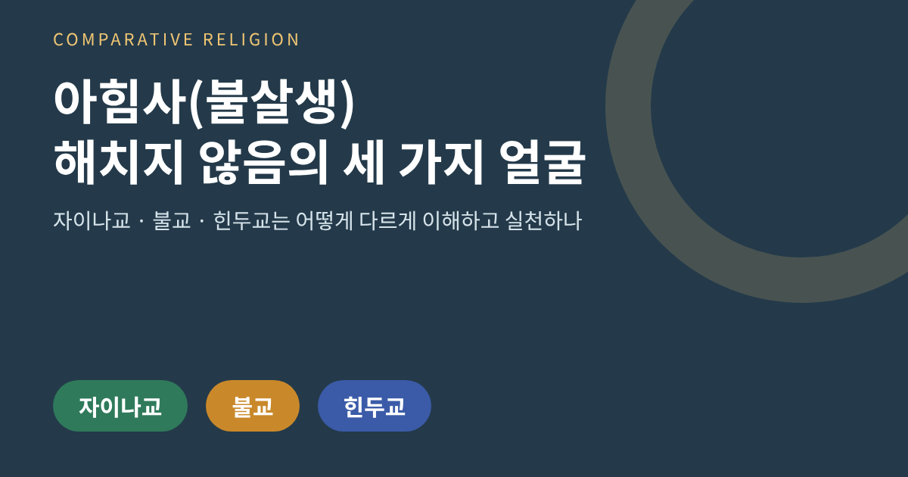
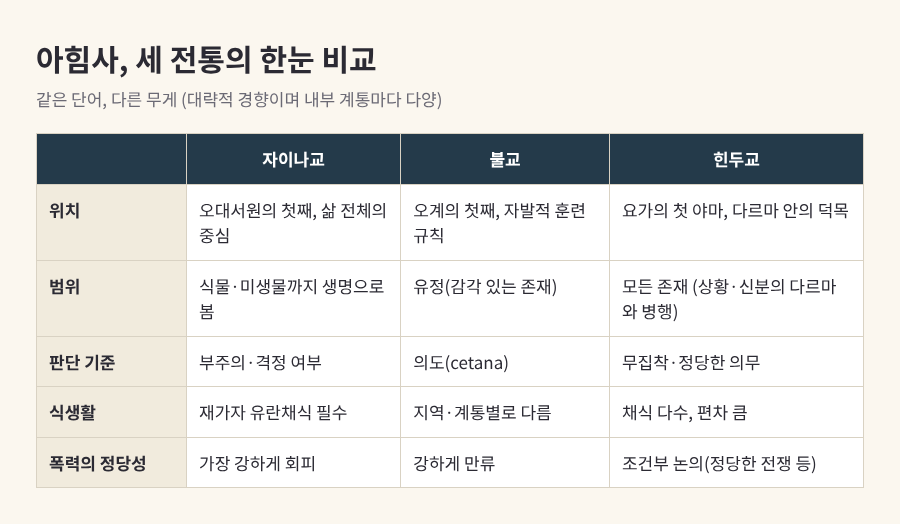
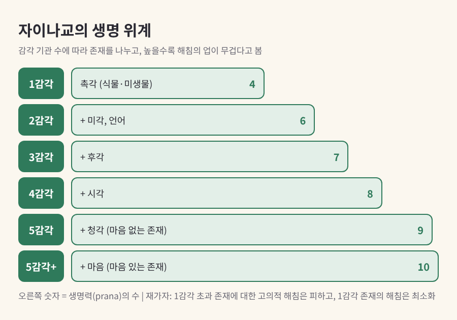
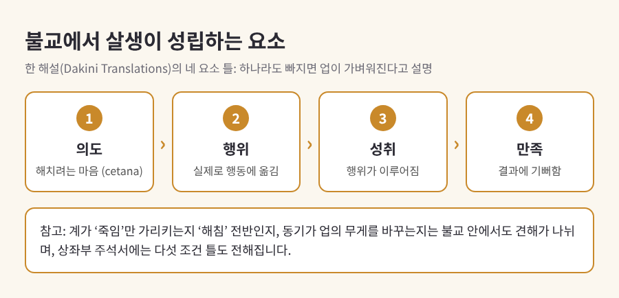
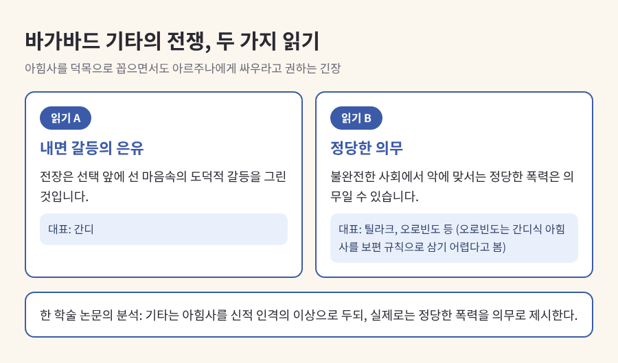
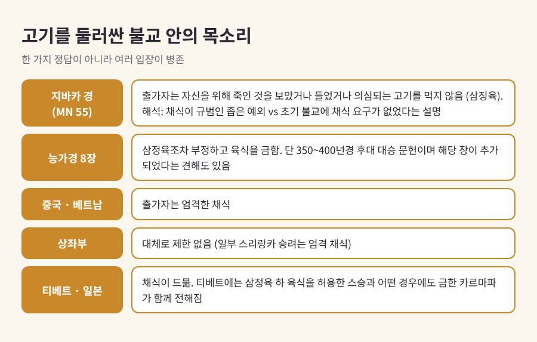

오늘은 인도에서 태어난 세 전통이 공유하는 개념, 아힘사(ahiṃsā)를 비교해 보려 합니다.
'해치지 않음'이라는 같은 단어를 두고도 자이나교, 불교, 힌두교는 적용 범위와 실천 방식이 상당히 다릅니다.
어느 쪽이 옳은지를 가리려는 글이 아니라, 각 전통이 이 말을 어떻게 읽고 살아내 왔는지를 차분히 정리하는 글입니다.
아힘사는 '해치다, 치다'를 뜻하는 말에 부정 접두사 a-가 붙은 단어입니다. 해침이 없는 상태, 곧 비폭력을 가리킵니다.
기원은 꽤 오래되었습니다.
리그베다 시대의 의례에는 동물 희생이 있었고, 아힘사는 간접적으로만 나타납니다.
기원전 800년경으로 보는 견해가 많은 찬도기야 우파니샤드에 이르러서야 아힘사가 진실, 보시, 고행과 나란히 덕목으로 꼽힙니다. 다만 이 문헌의 연대는 학자마다 다르게 추정합니다.
제사 중심의 세계에서 윤리 중심의 세계로 무게가 옮겨 가는 흐름 속에서, 아힘사는 인도 종교 전반의 공용어가 되었습니다.
세 전통은 이 공용어를 각자의 문법으로 번역했습니다.

자이나교에서 아힘사는 오대서원(五大誓願)의 첫째입니다. 진실, 불투도, 순결, 무소유가 뒤를 잇습니다.
출가자는 이 서원을 전면적으로 지키는 대서원(마하브라타)을, 재가자는 완화된 소서원(아누브라타)을 따릅니다.
자이나교의 독특한 점은 생명을 보는 범위입니다.
땅, 물, 공기, 식물에도 생명이 있다고 보고, 감각 기관의 수에 따라 존재를 나눕니다.
촉각만 가진 존재(식물·미생물)는 생명력이 네 가지, 마음을 가진 오감 존재는 열 가지로 헤아립니다.
높은 단계의 존재를 해칠수록 업도 무겁다고 봅니다.
또 하나는 '부주의'의 개념입니다.
타트바르타 수트라는 해침을 부주의한 마음·말·몸의 활동으로 생명을 끊는 것으로 정의합니다.
누군가 다치지 않았더라도 조심성 없이 행동했다면 그 자체가 폭력입니다. 폭력은 일차적으로 자기 영혼에 입히는 손상이기도 합니다. 해로운 행위가 해탈을 가로막기 때문입니다.
그래서 실천이 구체적입니다.
그렇다고 일상이 불가능한 이상만을 말하지는 않습니다.
재가자의 해침을 네 가지로 나누어, 의도적인 해침은 전면 포기하되 가사와 직업에서 불가피한 해침은 최소화하도록 합니다. 자기방어는 허용한다는 해석도 있습니다.
12세기 이후 일부 문헌은 더 큰 폭력을 막기 위한 싸움을 인정하기도 했는데, 이는 드문 예외로 평가됩니다.

불교에서 아힘사는 오계의 첫째, 팔리어로 pāṇātipātā veramaṇī, 곧 '생명을 해침으로부터 삼가겠다'는 다짐으로 나타납니다.
재가자에게 이것은 신이 내린 명령이 아니라 스스로 받아 지니는 훈련 규칙입니다. 어기면 업의 결과가 따른다고 봅니다.
판단의 무게중심은 의도(cetana)에 놓입니다.
경전 용례는 대체로 '죽이는 것'을 가리킵니다. 계가 '죽임'에만 해당하는지 '해침' 전반을 포함하는지는 지금도 논의됩니다. 또 동기가 업의 무게를 바꾼다는 견해와, 죽임은 어떤 동기로도 늘 불선이라는 견해가 함께 있습니다.
한 해설은 완전한 범계에 의도, 행위, 그 행위의 성취, 결과에 대한 기쁨이 갖추어져야 하며 하나라도 빠지면 업이 가벼워진다고 설명합니다.
출가자에게는 기준이 더 엄격합니다.
사람을 고의로 죽인 비구는 승가에서 완전히 추방됩니다. 율장은 벌레나 개미에 이르기까지 생명을 의도적으로 끊는 일을 금합니다. 우기에 안거를 하는 관행에도 걸으며 생명을 밟지 않으려는 뜻이 있다고 설명됩니다.
재가자에게는 무기, 생명, 고기, 취하게 하는 것, 독을 거래하는 생업을 피하라고 권합니다(AN V.177).
기원전 3세기의 아쇼카 왕은 칼링가 전쟁 이후 무력 정복을 버리고 '법에 의한 정복'을 표방했습니다.
마애 칙령에는 동물 도살 제한, 동물 치료, 일부 새끼 동물 보호가 담겼습니다. 아힘사가 개인의 계율을 넘어 통치 원리가 된 사례입니다.

힌두교에서 아힘사는 요가 수트라의 여덟 단계 중 첫 번째 금계(야마)이며, 주석가들은 가장 중요한 야마로 꼽았습니다.
마하바라타는 '아힘사 파라모 다르마', 곧 비폭력이 최상의 법이라는 구절을 거듭 되풀이합니다.
비슈마는 육식이 살생을 부르고 수명을 줄인다고 말하기도 합니다.
같은 서사시 안에 전사의 사냥을 허용하는 대목도 있습니다. 은자에게는 금지합니다.
힌두교의 아힘사는 신분과 상황에 따른 다르마(법도)라는 더 넓은 틀 안에서 작동하기 때문입니다.
가장 유명한 긴장은 바가바드 기타에 있습니다.
기타는 아힘사를 신적 자질의 하나로 꼽으면서도, 크리슈나는 전장에서 망설이는 아르주나에게 싸우라고 권합니다.
이를 어떻게 읽느냐가 갈립니다.
힌두 전통 안의 정당한 전쟁 논의에는 최후 수단일 것, 정당한 권위가 개시할 것, 독화살 금지, 부상자와 민간인 보호 같은 원칙이 보입니다.
식생활도 일정하지 않습니다.
채식이 널리 퍼졌지만, 베다 문헌과 의학서에는 고기를 권하는 대목이 있고 오늘날에도 육식하는 힌두가 많습니다.
브리태니커는 힌두교가 자이나교만큼 엄격한 준수를 요구한 적은 없으나, 채식과 생명에 대한 관용은 인도 사회에 폭넓게 퍼졌다고 정리합니다.

세 전통이 가장 선명하게 갈리는 곳은 식탁입니다.
자이나교는 재가자 채식을 필수로 삼습니다.
불교는 지역과 계통에 따라 다릅니다. 지바카 경(MN 55)은 출가자가 자신을 위해 죽인 것을 보았거나 들었거나 의심되는 고기를 먹지 않는다는 조건(삼정육)을 말합니다.
이 구절을 어떻게 읽을지는 입장이 나뉩니다. 한쪽은 이를 채식이 규범이라는 사실을 전제한 좁은 예외로 읽고, 다른 쪽은 초기 불교에 채식 요구가 없었으며 붓다도 탁발한 음식을 받았다고 설명합니다.
팔리 문헌은 데바닷타의 육식 금지 제안을 붓다가 거절했다고도 전합니다.
대승의 능가경 8장은 삼정육조차 부정하며 육식을 분명히 금합니다. 다만 이 경전은 350~400년경 성립한 후대 문헌이고 해당 장이 나중에 덧붙여졌다는 견해도 있습니다.
지금의 모습도 갈립니다. 중국과 베트남의 출가자는 엄격한 채식을 하고, 상좌부는 대체로 제한이 없으며, 티베트와 일본에서는 채식이 드뭅니다. 티베트 안에서도 삼정육 아래 육식을 허용한 스승과 어떤 경우에도 금한 카르마파가 함께 전해집니다.
힌두교는 앞서 보았듯 편차가 크고, 폭력의 정당성에 대해서도 세 전통의 무게는 다릅니다.
자이나교는 가장 강하게 피하고, 불교는 강하게 만류하되 의도를 따지며, 힌두교는 다르마라는 틀에서 조건을 붙여 논합니다.
세 전통이 만나는 지점도 분명합니다. 해침이 행위자에게 되돌아온다고 보는 점, 몸뿐 아니라 말과 생각까지 포함하는 점, 동물에 대한 연민을 영적 가치로 여기는 점입니다.

20세기 초 간디는 아힘사를 정치로 끌어왔습니다.
특정한 악에 맞서는 비폭력 저항, 사티아그라하(진리 파지)입니다. 간디는 아힘사를 거친 말과 부정직, 생각의 영역까지 넓혔고, 자이나교의 체계적인 아힘사와 마하비라의 권위를 높이 평가했습니다.
이 흐름은 마틴 루서 킹과 미국 민권운동의 훈련가들에게 이어졌습니다. 슈바이처의 '생명에 대한 외경'도 인도의 아힘사에 기댄 개념으로 소개됩니다.
간디에게도 비판은 따랐습니다.
자이나 쪽에서는 그가 소의 안락사를 승인한 일을 문제 삼았다고 전해집니다. 자이나교의 산랄레카나(자발적 단식 임종)를 두고는 자기 학대라는 비판과 고결한 수행이라는 이해가 공존합니다.
정리하면 이렇습니다.
자이나교는 아힘사를 삶 전체를 짜는 틀로, 불교는 마음의 의도를 다스리는 훈련으로, 힌두교는 다르마 안에서 저울질하는 이상으로 이어 왔습니다.
"같은 말, 다른 무게."
아힘사를 하나의 정답으로 환원하지 않고 이렇게 나란히 놓고 보는 것이 비교종교학의 쓸모일 것입니다.
해치지 않는다는 말 하나가 이토록 다양한 삶의 방식을 낳았다는 사실이, 오늘 우리가 '비폭력'을 다시 생각할 때 좋은 출발점이 되리라 생각합니다.
이 글은 비교종교·종교학의 교양 관점에서 정리한 것이며, 특정 신앙의 우열이나 신학적 진리 주장을 다루지 않습니다. 각 전통 안에도 학파와 계통에 따른 다양한 해석이 있습니다.